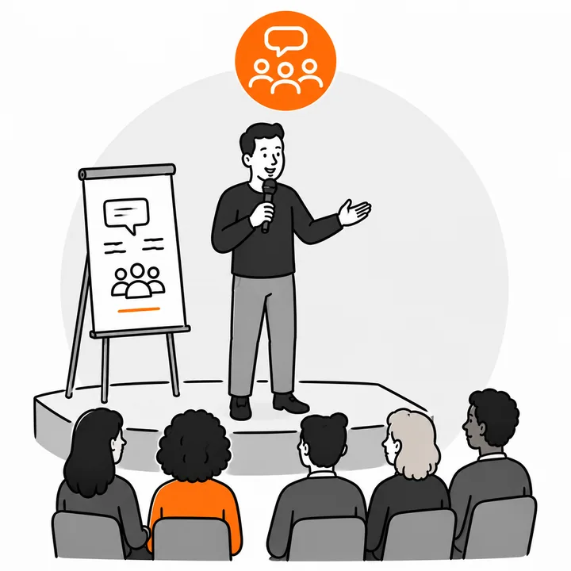

Moderation
Event-Moderation für Konferenzen und Organisationen, die ihre Themen souverän auf die Bühne bringen und ihr Publikum wirklich erreichen wollen.
- Event-Moderation
- Veranstaltungs-Design
- Keynotes & Vorträge
Ergebnis Veranstaltungen mit rotem Faden, die Inhalte klar transportieren, das Publikum einbinden und in Erinnerung bleiben.
Moderation